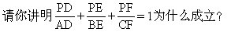

第十四讲 面积计算
在小学阶段学习的各种平面图形之间有着密切的联系.我们把平面图形之间的转化方法及它们的面积、周长公式归纳如下图：
计算图形的面积要用面积公式，对于一些复杂的图形有意识地运用运动变化的观点，将平面图形简单地变动位置，可以化繁为简，化难为易，从而获得最佳解法。
例1 已知三角形ABC的面积为1，BE=2AB，BC=CD，求三角形BDE的面积？（下页图）
分析 利用已给的线段间的比例关系、已给的三角形的面积以及三角形的面积公式，设法把三角形BDE划分成一些与三角形ABC的面积成相应比例的三角形.这样，三角形BDE的面积就能求得了。
解：见右图，连结CE.对于三角形ABC与三角形BEC，分别把AB和BE
可知，
S△BEC=2S△ABC=2.
显然，三角形BEC和三角形CED
是两个等底（BC＝CD）、等高的三角形，因此
S△CED=S△BEC＝2。
这样，S△BDE＝S△BEC＋S△CED=4。
例2 求右图中阴影部分的面积.（大圆直径为2，单位：厘米）。
分析： 解题时可以先将图形下半部分翻转拼接为右图.然后将图中的小圆移至中心从图中不难看出求原图中阴影部分的面积就是求一个圆环的面积。

解：大圆半径：2÷2＝1（厘米）
小圆半径：1÷2=0.5（厘米）
阴影面积：3.14×（12-0.52）
＝2.355（平方厘米）
答：阴影部分的面积是2.355平方厘米.
例3 如下图.在图中三角形ABE、ADF和四边形AECF的面积相等，求三角形AEF的面积。
分析 三角形AEF的面积等于四边形AECF的面积减去三角形ECF的面积.因为长方形ABCD的面积等于三角形ABE、ADF和四边形AECF的面积和，

长方形ABCD的长、宽分别为9厘米和6厘米，因此很容易求出它的面积.所以解题关键在于求出三角形ECF的面积。

EC的长度.同理可以求出FC的长度.这样三角形ECF的面积可以求出，使问题得解。
解：长方形ABCD的面积：9×6=54（平方厘米）；
四边形AECF及三角形ABE、AFD的面积相等，是：
EC的长度：9-18×2÷6=3（厘米）；
FC的长度：6-18×2÷9=2（厘米）；
三角形AEF的面积：
18-3×2÷2＝15（平方厘米）。
答：三角形AEF的面积是15平方厘米。
例4 如下页图.等腰直角三角形ABC的腰为10厘米；以A为圆心，EF为圆弧，组成扇形AEF；阴影部分甲与乙的面积相等.求扇形所在的圆面积.
分析 ∵△ABC是等腰直角三角形，∴AC＝BC，∠A=∠B＝45°。S甲＝S乙，即S△ABC的面积等于以AE为半径，圆心角是45°的扇形面积.根据已知条件，可求出三角形ABC的面积从而可求出圆面积。
周角是45°圆心角的几倍？360×45=8；
圆面积：50×8＝400（平方厘米）。
答：扇形所在的圆面积是400平方厘米。
分析 利用一种称之为“弦图”的求面积的方法.用“弦图”计算面积最主要的是掌握“弦图”的特点.其一：大正方形边长=长方形长x+长方形宽y。

其二：小正方形的边长=长方形的长x-长方形的宽y.解题时先把四个面积为
解：拼成后大正方形的面积：
<
大正方形的边长：

长方形的长（即长方形木条的长）：
例6 一块长方形钢板，长截下4分米，宽截下1分米后，成了一块正方形钢板，如右图，面积比原来减少了49平方米.原来长方形钢板的面积是多少平方米？
分析 初看起来，图中长方形长和宽，正方形的边长都不知道，无法求出长方形的面积，能否用特殊的方法思考呢？审题后发现长方形的长、宽和面积都和正方形有关系.图中阴影部分，如果添一条“辅助线”，如下页图（1）或下页图（2），把它分解成两个长方形.以下页图（2）为例.记正方形的边长为x分米.带阴影的小长方形长为（x+4）分米，宽为1分米，带阴影的大长方形长为x分米，宽为4分米.“面积比原来（长方形）减少了49平方米”，也就是大长方形阴影部分面积+小长方形阴影部分面积=阴影部分总面积=49平方分米，用方程解.
解：设正方形边长为x分米。
（x＋4）×1＋4x=49，
x+4+4x=49，
5x=45，
x=9。
9×9＋49=130（平方分米）
答：长方形钢板面积为130平方分米。
之比（如右图）。

解：连结ED和BD.得知S△AEH=S△AED，
即四边形EFGH的面积∶四边形ABCD面积=5∶9。
例8 如右图，已知三角形ABC的三条高必定交于一点，如记成P点，

分析与解答 从右图中可以看出△PBC和△ABC是同底的两个三角形，
又∵S△PBC+S△PCA+S△PAB=S△ABC，